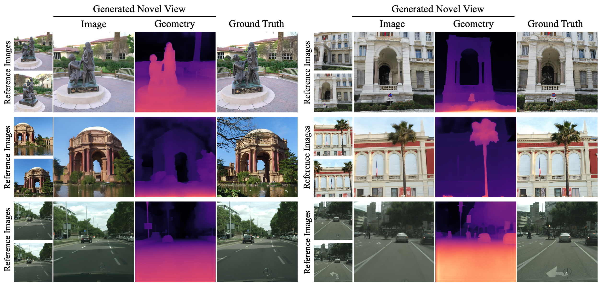
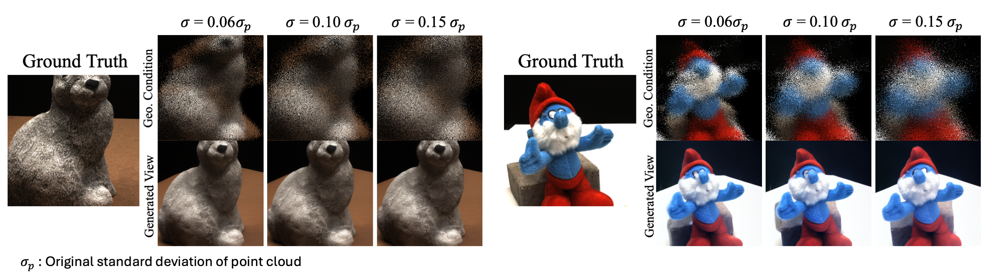
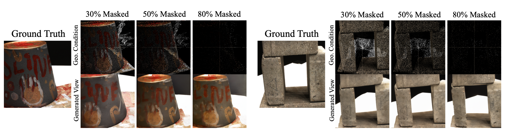
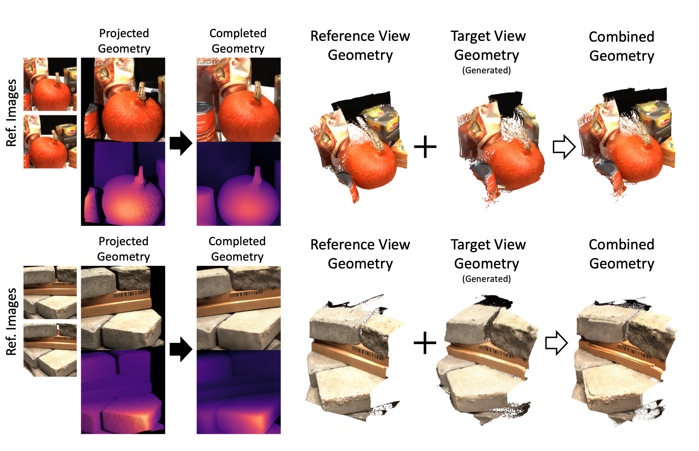
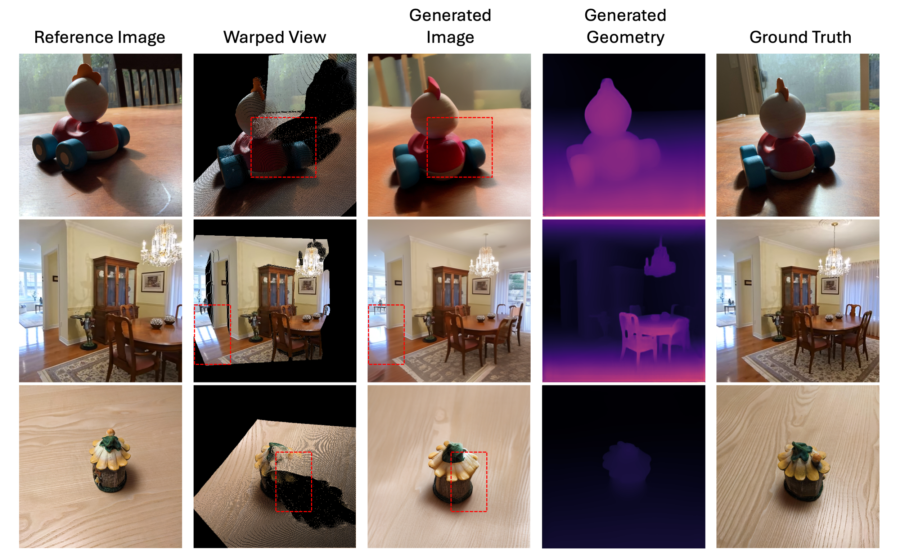

Supplementary Webpage
Figure 1

Figure 1: Comparison between our method and state-of-the-art NVS models on the RealEstate10k dataset (in-domain).
Figure 2

Figure 2: Comparison between our method and state-of-the-art NVS models on the Navi dataset (in-the-wild).
Figure 3

Figure 3: Generalization results on unseen in-the-wild / urban datasets (MegaDepth, CityScapes).
Figure 4

Figure 4: Visualization of MoAI's robustness against noise added to predicted geometry.
Figure 5

Figure 5: Visualization of MoAI's robustness against increased sparsity of predicted geometry.
Figure 6

Figure 6: Alignment visualization between reference view geometry and generated target view geometry, evaluated with DepthAnything V3.
Figure 7

Figure 7: Occlusion / lighting / Shadow handling in extrapolative (greater than 90 degrees) target camera pose.